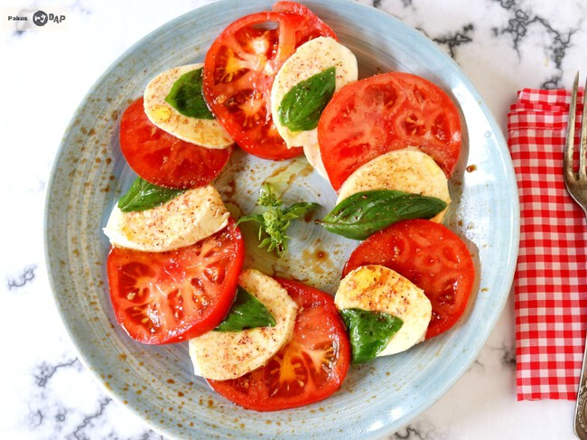

Descripción
Una ensalada italiana fresca y simple, con tomates maduros, mozzarella fresca y albahaca aromática. Perfecta como entrada ligera y elegante.
Ingredientes
- 4 tomates grandes y maduros
- 250g de mozzarella fresca (burrata o di bufala)
- Hojas frescas de albahaca
- 3 cucharadas de aceite de oliva virgen extra
- 1 cucharada de vinagre balsámico
- Sal y pimienta negra al gusto
Pasos de preparación
- Lava los tomates y córtalos en rodajas gruesas.
- Corta la mozzarella en rodajas del mismo grosor que los tomates.
- En un plato, alterna capas de tomate y mozzarella formando una línea diagonal.
- Espolvorea con sal y pimienta negra recién molida.
- Coloca hojas frescas de albahaca entre las capas de tomate y queso.
- Rocía con aceite de oliva virgen extra.
- Agrega unas gotas de vinagre balsámico sobre la ensalada.
- Sirve inmediatamente a temperatura ambiente.
Tiempo de preparación
Preparación: 10 minutos | Cocción: 0 minutos | Total: 10 minutos
Porciones
Rinde 4 porciones